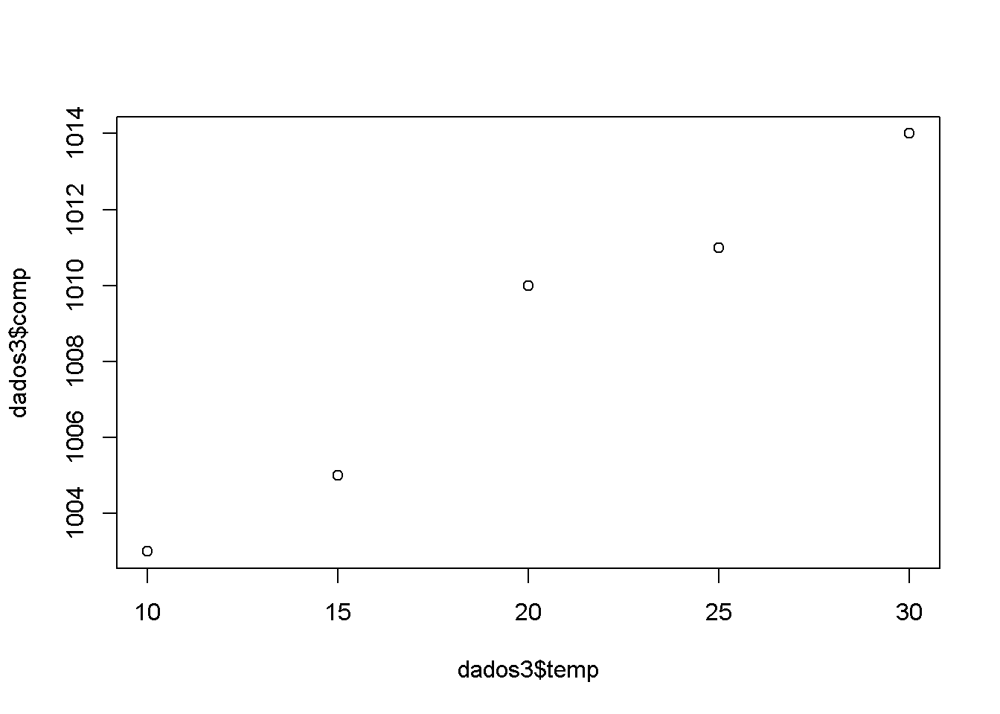
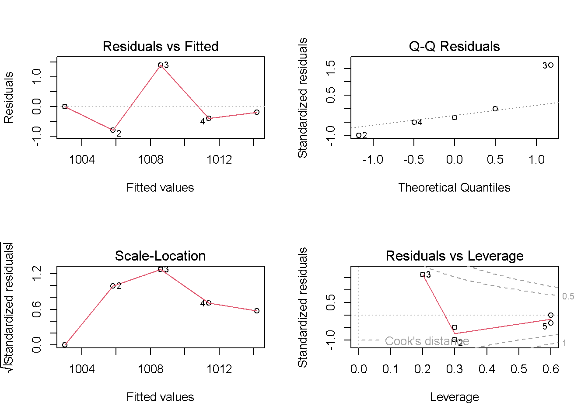
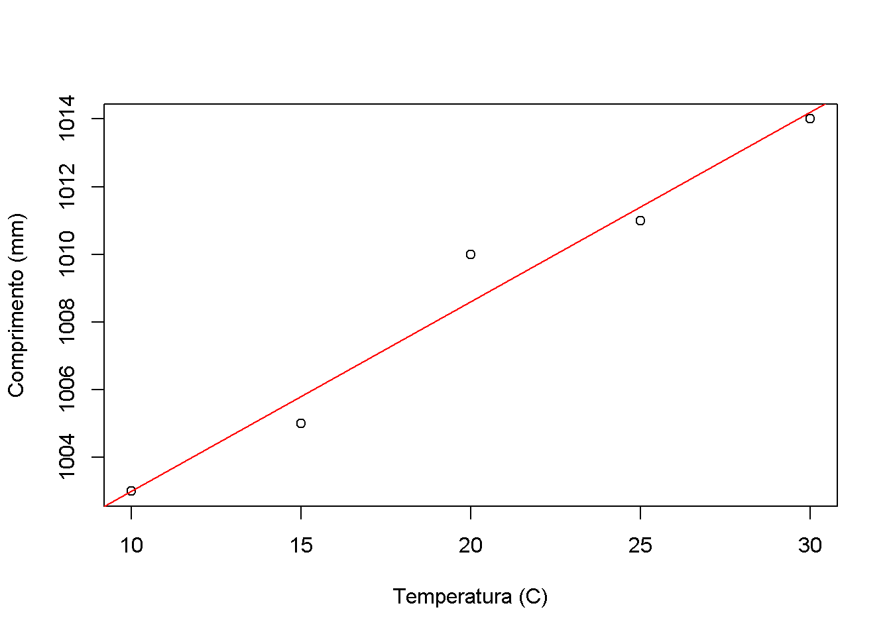
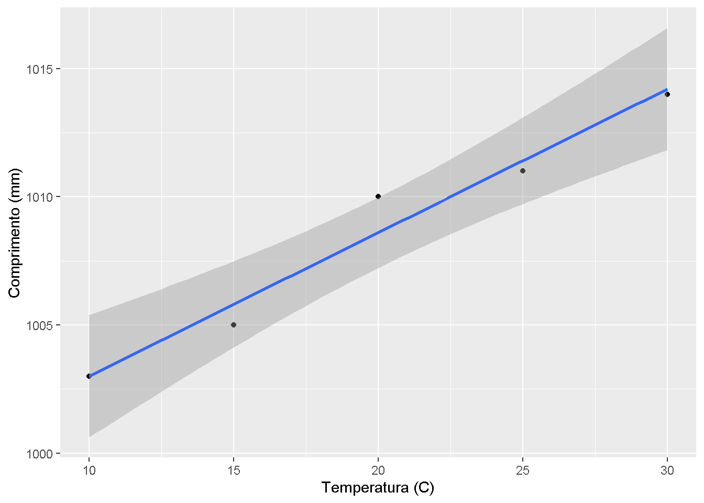
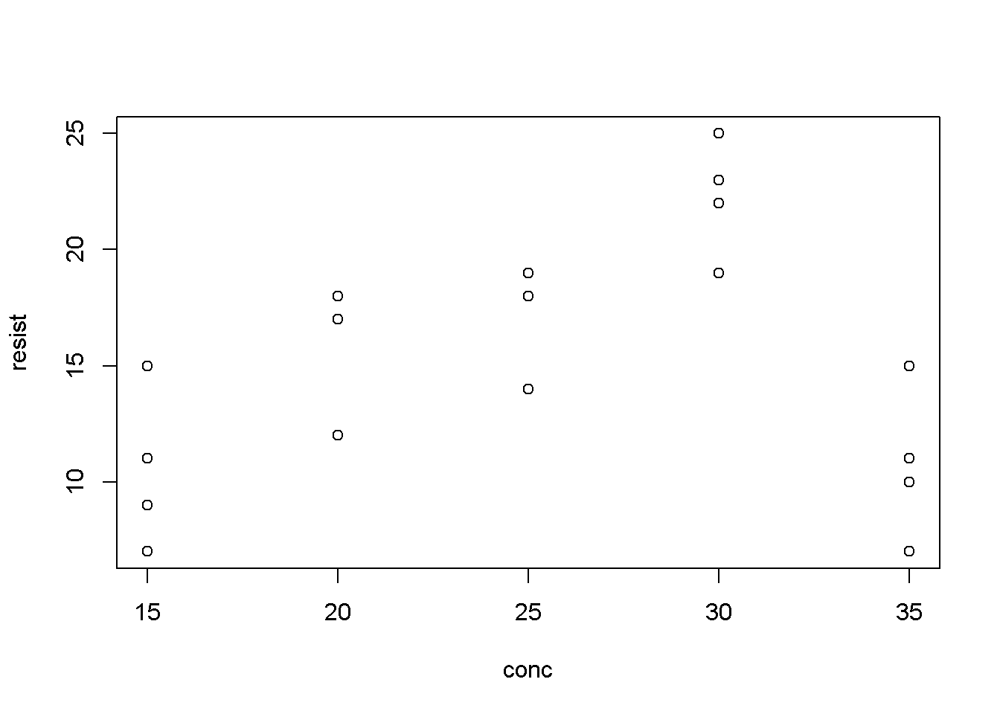
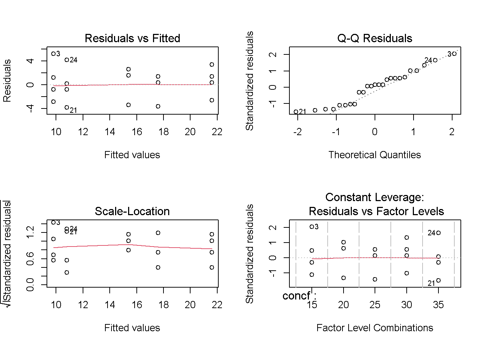
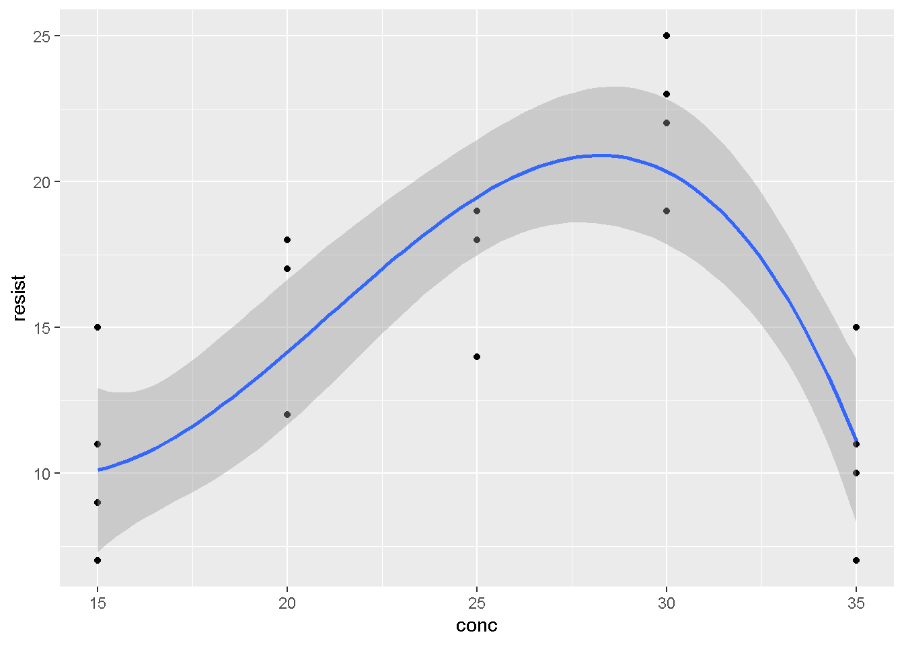

Capítulo 6 Regressão Linear
6.1 Regressão Linear Simples
A análise de Regressão Linear Simples pode envolver dois cenários, a depender da estrutura de dados utilizada.
Um primeiro caso, bastante típico, correponde em se utilizar apenas uma única observação para cada nível da variável independente X. Isso corresponderia a um experimento sem repetições, uma vez que cada nível da variável independente corresponde a um tratamento. Em geral, no caso de análise de dados oriundos de um experimento, o que os pesquisadores fazem é calcular a média de cada tratamento, tomando estes valores como uma observação única.
Um segundo caso é considerarmos todas as observações ou repetições na Análise de Regressão. Este caso é mais desafiador em termos analíticos. Porém, permite uma análise mais cuidadosa do ajuste do modelo, através da Análise da Falta de Ajuste. Vamos abordar estes dois casos a seguir.
6.1.1 Observação única para cada nível da variável X
Exemplo 1: Um estudo foi conduzido para verificar a dilatação em barras de aço. Para tanto, foram testadas diferentes temperaturas (°C) e medidos os comprimentos (mm) das barras de aço. Pede-se ajustar um modelo de Regressão Linear Simples.
- A primeira etapa é realizar a importação do dataset.
## temp comp
## 1 10 1003
## 2 15 1005
## 3 20 1010
## 4 25 1011
## 5 30 1014- Na Análise de Regressão, a investigação de um gráfico de dispersão nos dá uma idéia do relacionamento entre as variáveis.
- Nesse caso, a variável independente (x) é a temperatura e a variável resposta (y) é o comprimento das barras

- Pela análise gráfica, verificamos que é bem provável existir uma relação linear simples entre as variáveis.
- Portanto vamos ajustar um modelo linear do tipo:
\[y_{i}=\beta _{0}+\beta _{1}x_{i}+\epsilon\]
- Este ajuste pode ser facilmente obtido usando a função
lm
##
## Call:
## lm(formula = comp ~ temp, data = dados3)
##
## Coefficients:
## (Intercept) temp
## 997.40 0.56- Como resultado, temos em mãos os coeficientes b0 e b1, estimados pelo método dos mínimos quadrados, de maneira que a equação ajustada fica:
\[\hat{y}=997.40 +0.56x\] - Embora tenhamos um modelo ajustado, é importante avaliar se este modelo apresenta boas propriedades estatísticas
- Uma primeira providência é realizar a análise das pressuposições dos resíduos do modelo:
- Linearidade
- Normalidade
- Homodecasticidade
- A análise gráfica dos resíduos pode ser facilmente implementada:

##
## Shapiro-Wilk normality test
##
## data: resid(reg1)
## W = 0.86775, p-value = 0.2574Além da análise das presuposições, precisamos verificar também a significância do modelo e dos coefiicentes estimados b0 e b1. É possível avaliar estas propriedades de diferentes formas:
- ANOVA da Regressão com a função
anova
## Analysis of Variance Table
##
## Response: comp
## Df Sum Sq Mean Sq F value Pr(>F)
## temp 1 78.4 78.400 84 0.002746 **
## Residuals 3 2.8 0.933
## ---
## Signif. codes: 0 '***' 0.001 '**' 0.01 '*' 0.05 '.' 0.1 ' ' 1A Tabela da ANOVA da Regressão permite testar a significância da equação ajustada.
Algumas interpretações importantes:
- O F calculado é a razão entre o QMReg/QMRes.
- Este valor, sendo significativo, como é o caso, implica em verificar se os coeficientes são diferentes de zero. As hipóteses a serem testadas são:
- H0: b0 = b1 = 0
- Ha: Pelo menos um bi diferente de zero
- O resultado obtido indica que a equação ajustada apresenta efeito singinficativo (p = 0,002746), ou seja, a variação explicada pelo modelo é mais importante que a variação residual
- Teste t para coeficientes com a função
summary
##
## Call:
## lm(formula = comp ~ temp, data = dados3)
##
## Residuals:
## 1 2 3 4 5
## -9.008e-14 -8.000e-01 1.400e+00 -4.000e-01 -2.000e-01
##
## Coefficients:
## Estimate Std. Error t value Pr(>|t|)
## (Intercept) 997.4000 1.2961 769.511 4.84e-09 ***
## temp 0.5600 0.0611 9.165 0.00275 **
## ---
## Signif. codes: 0 '***' 0.001 '**' 0.01 '*' 0.05 '.' 0.1 ' ' 1
##
## Residual standard error: 0.9661 on 3 degrees of freedom
## Multiple R-squared: 0.9655, Adjusted R-squared: 0.954
## F-statistic: 84 on 1 and 3 DF, p-value: 0.002746Podemos verificar algumas estatísticas importantes:
O teste t para os coeficientes da regressão implica em testar as hipóteses de que os coeficientes são iguais a zero ou não na forma de:
- H0: bi \(=\) 0
- Ha: bi \(\neq\) 0
O resultado indica que os dois coeficientes apresentam significância, indicando que os mesmos são diferentes de zero.
A principal implicação prática refere-se ao coeficiente b1. Caso o teste t seja não significativo, este coeficiente tem inclinação zero e, portanto, teríamos uma situação em que a variação de x não exerce influencia sobre a variação em y
Outro resultado prático é a interpretação do valor de R2, conhecido como Coeficiente de Determinação
O R2 pode ser obtido por:
\[R^{2}= \frac{SQReg}{SQTotal}\]
O R2 = 0,9655 indica que o modelo utilizado explica 96,55% da variação observada em y, indicando uma qualidade de ajuste muito boa.
É importante ressaltar que o R2 varia de 0 < R2 < 1
- Um próximo passo é criar o gráfico de dispersão para incluir a reta da equação ajustada. Vamos fazer isso de duas maneiras.
- Utilizando as funções básicas do R:
plot(x = dados3$temp, y = dados3$comp,
ylab = "Comprimento (mm)",
xlab = "Temperatura (C)")
abline(reg1, col="red")
- Utilizando o pacote
ggplot2:
#install.packages("ggplot2")
library(ggplot2)
ggplot(dados3, aes(temp, comp)) +
geom_point() +
geom_smooth(method='lm', se=TRUE) +
labs(x="Temperatura (C)", y="Comprimento (mm)")## `geom_smooth()` using formula = 'y ~ x'
6.1.2 Mais de uma observação (repetições) para cada nível da variável X
Uma situação mais comum em Delineamentos Experimentais é trabalhar com dados com repetição. Sendo assim os procedimentos são:
Realizar a ANOVA do Delineamento Experimental de forma convencional
Na sequência, realizar a Análise de Regressão, levando em consideração a Análsie da Falta de Ajuste
É importante destacar que vamos empregar uma técnica denominada de Regressão Polinomial, em que é possível ajustar uma equação de grau n do tipo:
\[y_{i}=\beta _{0}+\beta _{1}x_{i}+\beta _{2}x_{i}^2+...+\beta _{n}x_{i}^n+\epsilon\]
- A Regressão Polinomial pode ser útil quando existe uma relação não linear clara entre as varáveis.
Exemplo 2: Em um experimento no DIC com cinco repetições foram testadas cinco doses de um hormônio vegetal (15, 20, 25, 30 e 35 ppm), e seu efeito na indução de resistência a um inseto praga. A variável resposta indica o número de insetos praga encontrados em cada parcela.
- Input de Dados
## conc resist
## 1 15 7
## 2 15 7
## 3 15 15
## 4 15 11
## 5 15 9
## 6 20 12
## 7 20 17
## 8 20 12
## 9 20 18
## 10 20 18
## 11 25 14
## 12 25 18
## 13 25 18
## 14 25 19
## 15 25 19
## 16 30 19
## 17 30 25
## 18 30 22
## 19 30 19
## 20 30 23
## 21 35 7
## 22 35 10
## 23 35 11
## 24 35 15
## 25 35 11- Análise Exploratória
- Por se tratar de um fator quantitativo, podemos fazer uma análise exploratória simples por meio de um gráfico de dispersão

- A análise gráfica não parece retratar um modelo linear simples. A distribuição dos dados parece indicar um relação de 2 grau entre as variáveis. As análises estatísticas subsequentes vão nos ajudar a tomar essa decisão.
- ANOVA do Delineamento Experimental
- Como o vetor de tratamentos é numérico, será necessário criar um vetor de fatores auxiliar para a ANOVA
- Na sequência realiza-se a ANOVA, conforme já conhecemos, utilizando o vetor adicional criado
## Analysis of Variance Table
##
## Response: resist
## Df Sum Sq Mean Sq F value Pr(>F)
## concf 4 475.76 118.94 14.757 9.128e-06 ***
## Residuals 20 161.20 8.06
## ---
## Signif. codes: 0 '***' 0.001 '**' 0.01 '*' 0.05 '.' 0.1 ' ' 1Com base no resultado, verificamos a significância dos efeitos das doses (p < 0,05), implicando em uma análise de regressão complementar
Podemos também realizar a Análise de Resíduos para as pressuposições do modelo:

##
## Shapiro-Wilk normality test
##
## data: resid(mod)
## W = 0.94387, p-value = 0.1818- Análise de Regressão - Modelo de 1° Grau
Teremos que realizar um ajuste simultâneo para os tratamentos e a equação de regressão.
O que fazemos aqui é ajustar um modelo de 1° grau incluindo os tratamentos e, em seguida, aplicar uma ANOVA ao modelo.
Colocamos o termo adicional
dosefpara tratamentos
## Df Sum Sq Mean Sq F value Pr(>F)
## conc 1 33.6 33.62 4.171 0.0545 .
## concf 3 442.1 147.38 18.285 5.97e-06 ***
## Residuals 20 161.2 8.06
## ---
## Signif. codes: 0 '***' 0.001 '**' 0.01 '*' 0.05 '.' 0.1 ' ' 1- Compare o resultado com a ANOVA do Delineamento Experimental
- Inicialmente temos quatro graus de liberdade para tratamentos
- A fonte de variação
dosecorresponde ao modelo de 1° Grau e consome um grau de liberdade dos tratamentos - A fonte de variação
dosefcorresponde ao que chamamos de Falta de Ajuste (ou Desvios de Regressão) e constitue os graus de liberdade restantes - Veja que as Somas de Quadrados também podem ser somadas, indicando uma decomposição ortogonal
- Veja que o teste F para
dosenão é significativo a 5%. Isso indica que o modelo de 1° Grau não é adequado - Além disso, o teste F para a Falta de Ajuste é significativo, ou seja, existe variação não captada pelo modelo de 1° Grau
- Sendo assim, convém testar o modelo de 2° Grau
- Análise de Regressão - Modelo de 2° Grau
Nesse caso, vamos ajustar um modelo do tipo:
\[y_{i}=\beta _{0}+\beta _{1}x_{i}+\beta _{2}x_{i}^2+\epsilon\]
ar2 <- aov (lm (resist ~ conc + I(conc^2) + concf, data = dados4)) # I(conc^2) corresponde ao termo quadrático
summary(ar2)## Df Sum Sq Mean Sq F value Pr(>F)
## conc 1 33.6 33.6 4.171 0.05452 .
## I(conc^2) 1 343.2 343.2 42.582 2.33e-06 ***
## concf 2 98.9 49.5 6.137 0.00835 **
## Residuals 20 161.2 8.1
## ---
## Signif. codes: 0 '***' 0.001 '**' 0.01 '*' 0.05 '.' 0.1 ' ' 1- Embora o termo quadrático incluso no modelo apresente significância (p < 0,05), indicando um bom ajuste, percebe-se que a Falta de Ajuste ainda é singificativa.
- Além disso, temos graus de liberdade suficiente para testar um modelo de 3° Grau
- Análise de Regressão - Modelo de 3° Grau
Vamos ajustar um modelo do tipo:
\[y_{i}=\beta _{0}+\beta _{1}x_{i}+\beta _{2}x_{i}^2+\beta _{3}x_{i}^3+\epsilon\]
ar3 <- aov (lm (resist ~ conc + I(conc^2) + I(conc^3) + concf, data = dados4)) # I(dose^3) corresponde ao termo cúbico
summary(ar3)## Df Sum Sq Mean Sq F value Pr(>F)
## conc 1 33.6 33.6 4.171 0.0545 .
## I(conc^2) 1 343.2 343.2 42.582 2.33e-06 ***
## I(conc^3) 1 65.0 65.0 8.062 0.0101 *
## concf 1 33.9 33.9 4.212 0.0535 .
## Residuals 20 161.2 8.1
## ---
## Signif. codes: 0 '***' 0.001 '**' 0.01 '*' 0.05 '.' 0.1 ' ' 1Veja que a inclusão do termo cúbico foi significativa, indicando um bom ajuste.
Além disso, a Falta de Ajuste já não é significativa!
Portanto, temos um modelo bastante consistente.
Para concluir a análise, vamos obter a equação ajustada e os seus coeficientes utilizando a função
lmda forma convencional, sem incluir os efeitos de tratamentos:
##
## Call:
## lm(formula = resist ~ conc + I(conc^2) + I(conc^3), data = dados4)
##
## Residuals:
## Min 1Q Median 3Q Max
## -5.4686 -1.4686 -0.4686 2.6457 4.8886
##
## Coefficients:
## Estimate Std. Error t value Pr(>|t|)
## (Intercept) 62.611429 39.757436 1.575 0.1302
## conc -9.011429 5.196609 -1.734 0.0976 .
## I(conc^2) 0.481429 0.216046 2.228 0.0369 *
## I(conc^3) -0.007600 0.002874 -2.644 0.0152 *
## ---
## Signif. codes: 0 '***' 0.001 '**' 0.01 '*' 0.05 '.' 0.1 ' ' 1
##
## Residual standard error: 3.048 on 21 degrees of freedom
## Multiple R-squared: 0.6936, Adjusted R-squared: 0.6499
## F-statistic: 15.85 on 3 and 21 DF, p-value: 1.295e-05- Temos que ficar atentos a esta saída no R:
- Os coeficientes são estimados adequadamente e os teste de significância estão corretos. Dessa forma a equação ajustada é:
\[y=62.612-9.011x+0.481x^2-0.007x^3\]
- Porém, as estimativas do R^2^ e a estasítica F não correspondem ao cenário ideal!
- Isso ocorre porque o termo da Falta de Ajuste é incluído no Erro Experimental.
- Além disso, temso que ficar atentos ao R^2^ calculado. A saída do `summary`nesse caso não seria a mais correta.
- No caso de dados com repetição o R^2^ mais adequado é:\[R^{2}= \frac{SQReg}{SQTrat}=1-\frac{SQFA}{SQTrat}\]
- Sendo assim, temos:
## [1] 0.9287456- Finalmente, podemos fazer um gráfico e adicionar a nossa curva de regressão mais adequada:
ggplot(dados4, aes(conc, resist)) +
geom_point() +
geom_smooth(method='lm', se=TRUE, formula = y ~ x + I(x^2)+ I(x^3)) +
labs(x="conc", y="resist")
Embora tenhamos empregado um certo esforço para compreender o uso da Regressão Polinomial no contexto de um delineamento experimental, é possível trabalhar de forma bastante simplificada através do pacote Pacote ExpDes.pt
Veja abaixo como isso se torna mais simples, embora os conceitos e a interpretação dos resultados permanece a mesma!
##
## Attaching package: 'ExpDes.pt'## The following objects are masked from 'package:agricolae':
##
## lastC, order.group, tapply.stat## ------------------------------------------------------------------------
## Quadro da analise de variancia
## ------------------------------------------------------------------------
## GL SQ QM Fc Pr>Fc
## Tratamento 4 475.76 118.94 14.757 9.1279e-06
## Residuo 20 161.20 8.06
## Total 24 636.96
## ------------------------------------------------------------------------
## CV = 18.88 %
##
## ------------------------------------------------------------------------
## Teste de normalidade dos residuos ( Shapiro-Wilk )
## Valor-p: 0.1817575
## De acordo com o teste de Shapiro-Wilk a 5% de significancia, os residuos podem ser considerados normais.
## ------------------------------------------------------------------------
##
## ------------------------------------------------------------------------
## Teste de homogeneidade de variancia
## valor-p: 0.9197662
## De acordo com o teste de bartlett a 5% de significancia, as variancias podem ser consideradas homogeneas.
## ------------------------------------------------------------------------
##
## Ajuste de modelos polinomiais de regressao
## ------------------------------------------------------------------------
##
## Modelo Linear
## ========================================
## Estimativa Erro.padrao tc valor.p
## ----------------------------------------
## b0 10.9400 2.0862 5.2439 0.00004
## b1 0.1640 0.0803 2.0424 0.0545
## ----------------------------------------
##
## R2 do modelo linear
## --------
## 0.070666
## --------
##
## Analise de variancia do modelo linear
## =======================================================
## GL SQ QM Fc valor.p
## -------------------------------------------------------
## Efeito linear 1 33.6200 33.6200 4.17 0.05452
## Desvios de Regressao 3 442.1400 147.3800 18.29 1e-05
## Residuos 20 161.2000 8.0600
## -------------------------------------------------------
## ------------------------------------------------------------------------
##
## Modelo quadratico
## =========================================
## Estimativa Erro.padrao tc valor.p
## -----------------------------------------
## b0 -39.9886 8.0786 -4.9500 0.0001
## b1 4.5926 0.6834 6.7203 0
## b2 -0.0886 0.0136 -6.5255 0
## -----------------------------------------
##
## R2 do modelo quadratico
## --------
## 0.792068
## --------
##
## Analise de variancia do modelo quadratico
## =======================================================
## GL SQ QM Fc valor.p
## -------------------------------------------------------
## Efeito linear 1 33.6200 33.6200 4.17 0.05452
## Efeito quadratico 1 343.2143 343.2143 42.58 0
## Desvios de Regressao 2 98.9257 49.4629 6.14 0.00835
## Residuos 20 161.2000 8.0600
## -------------------------------------------------------
## ------------------------------------------------------------------------
##
## Modelo cubico
## =========================================
## Estimativa Erro.padrao tc valor.p
## -----------------------------------------
## b0 62.6114 37.0268 1.6910 0.1064
## b1 -9.0114 4.8397 -1.8620 0.0774
## b2 0.4814 0.2012 2.3927 0.0266
## b3 -0.0076 0.0027 -2.8394 0.0101
## -----------------------------------------
##
## R2 do modelo cubico
## --------
## 0.928649
## --------
##
## Analise de variancia do modelo cubico
## =======================================================
## GL SQ QM Fc valor.p
## -------------------------------------------------------
## Efeito linear 1 33.6200 33.6200 4.17 0.05452
## Efeito quadratico 1 343.2143 343.2143 42.58 0
## Efeito cubico 1 64.9800 64.9800 8.06 0.01013
## Desvios de Regressao 1 33.9457 33.9457 4.21 0.05347
## Residuos 20 161.2000 8.0600
## -------------------------------------------------------
## ------------------------------------------------------------------------